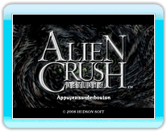
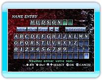
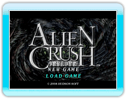

9 |
Lancement |
 |
Appuyez sur
Lorsque vous jouez pour la première fois, vous devez entrer un nom de joueur.
Vous pouvez choisir un nom jusqu'à 8 lettres.

Si des données de
sauvegarde existent, vous pouvez choisir entre NEW GAME ou LOAD GAME. Pour continuer une partie en cours, sélectionnez LOAD GAME. Pour commencer une nouvelle partie, sélectionnez NEW GAME.
● STORY MODE
● ARCADE MODE
● VERSUS MODE
● RANKING MODE
● OPTION MODE |
 |
 |
 |